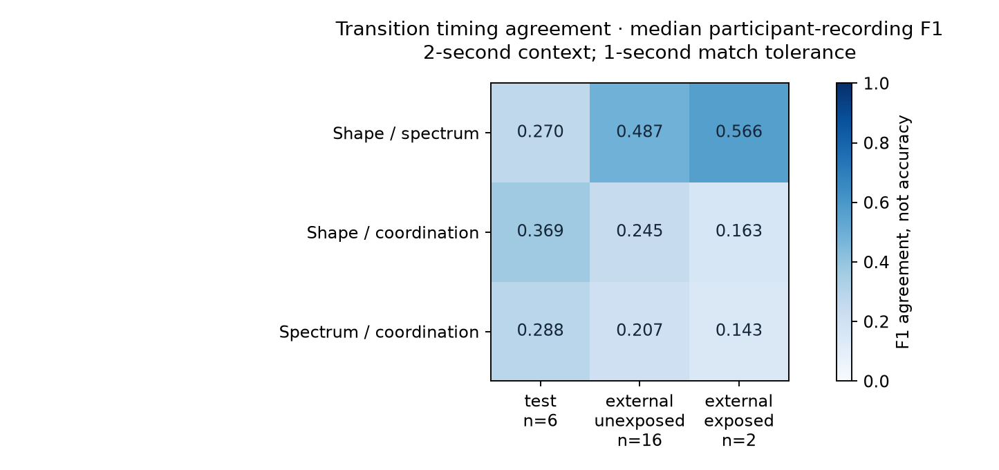

Research Notes · 003 / 004 / 006 / 007
More recordings.
Testable transitions.
An LLM’s interpretation of your brainwaves
We expanded the public around-ear EEG corpus and tested whether different numerical views locate the same changes. Every reported result is linked to a frozen protocol and source record.
These are LLM-authored numerical representations, not independent pretrained LLMs discovering a language. F1 measures timing agreement within one second; it is not accuracy against brain-state labels. Neither high agreement nor a change score establishes semantic meaning, a diagnosis or universal geometry.
004 · The continuous corpus
| Source | Status | Participant records | Sessions | Recorded hours |
|---|---|---|---|---|
| ds004015 | QUALIFIED | 36 | 36 | 47.29 |
| ds005207 | QUALIFIED | 18 | 18 | 176.18 |
| ds005207 | QUARANTINED | 1 | 1 | NA |
Source-local participant records are not a verified global person census. Gaps are retained. Overlapping windows add observations, not people. These are cEEGrid records; physical Neurable capture remains unverified.
003 · Where do the methods agree?

| Group | Records | Valid/all multichannel windows | Shape / spectrum F1 | Shape / coordination F1 | Spectrum / coordination F1 |
|---|---|---|---|---|---|
| train | 24 | 230,452/232,332 | 0.387 [0.335, 0.432]; n=24 | 0.453 [0.418, 0.511]; n=24 | 0.341 [0.287, 0.396]; n=24 |
| validation | 6 | 53,765/54,089 | 0.400 [0.316, 0.460]; n=6 | 0.474 [0.322, 0.550]; n=6 | 0.400 [0.287, 0.504]; n=6 |
| test | 6 | 53,535/53,802 | 0.270 [0.213, 0.347]; n=6 | 0.369 [0.277, 0.470]; n=6 | 0.288 [0.220, 0.300]; n=6 |
| external_exposed | 2 | 121,110/175,610 | 0.566 [0.546, 0.586]; n=2 | 0.163 [0.121, 0.205]; n=2 | 0.143 [0.095, 0.191]; n=2 |
| external_unexposed | 16 | 618,537/1,092,838 | 0.487 [0.468, 0.592]; n=16 | 0.245 [0.192, 0.271]; n=16 | 0.207 [0.198, 0.227]; n=16 |
Each entry is a participant-recording median, a descriptive 95% bootstrap interval and the contributing count. Empty event sets contribute no aggregate evidence. Primary context is 2 seconds; matches must fall within 1 second.
006 · Can controls produce similar structure?
| Control | Records | Valid windows | Shape / spectrum F1 | Shape / coordination F1 | Spectrum / coordination F1 |
|---|---|---|---|---|---|
| original | 16 | 3265 | 0.387 [0.303, 0.545]; n=15 | 0.368 [0.182, 0.400]; n=15 | 0.286 [0.182, 0.444]; n=15 |
| independent_phase | 16 | 2174 | 0.000 [0.000, 0.000]; n=2 | 0.000 [0.000, 0.000]; n=2 | NA |
| shared_phase | 16 | 2246 | 0.000 [0.000, 0.154]; n=9 | 0.062 [0.000, 0.286]; n=8 | 0.000 [0.000, 0.667]; n=5 |
| gain_1.1 | 16 | 3185 | 0.381 [0.323, 0.538]; n=15 | 0.333 [0.190, 0.400]; n=15 | 0.316 [0.182, 0.444]; n=15 |
| polarity_reverse | 16 | 3265 | 0.387 [0.303, 0.545]; n=15 | 0.368 [0.182, 0.400]; n=15 | 0.286 [0.182, 0.444]; n=15 |
| time_reverse | 16 | 3265 | 0.485 [0.316, 0.527]; n=15 | 0.200 [0.105, 0.316]; n=15 | 0.353 [0.200, 0.381]; n=15 |
The table shows prior-unexposed external records in a bounded 120-second control sample, using each variant’s valid support. Paired-support rate differences and all groups are in the downloadable results. Phase-randomized signals can retain structure; these are limited controls, not a complete test of biological meaning.
007 · Does the frozen detector transfer?
| Group | Shape changes/min | Spectrum changes/min | Coordination changes/min |
|---|---|---|---|
| train | 1.739 [1.506, 2.342]; n=24 | 2.296 [1.696, 2.908]; n=24 | 2.019 [1.666, 2.708]; n=24 |
| validation | 1.985 [1.141, 2.306]; n=6 | 2.087 [1.114, 4.636]; n=6 | 1.814 [1.542, 3.719]; n=6 |
| test | 1.610 [1.131, 2.023]; n=6 | 2.670 [1.197, 3.163]; n=6 | 1.932 [0.840, 2.915]; n=6 |
| external_exposed | 11.852 [10.394, 13.309]; n=2 | 13.221 [11.157, 15.285]; n=2 | 1.629 [1.160, 2.099]; n=2 |
| external_unexposed | 12.398 [7.366, 15.019]; n=16 | 8.747 [7.271, 13.197]; n=16 | 2.013 [1.604, 2.982]; n=16 |
Rates are changes per minute of eligible scored-window centers. No known brain-state labels were used, so these numbers are not diagnostic accuracy. The external exposed group contains two records used earlier; the external input pool includes 17 previously unused records; the tables count those actually analyzed.
005 · Neurable pilot
Protocol prepared; physical data collection has not run. The next device step is a documented raw Research Kit export or supported stream, verified channel order and calibration, measured sample loss, and repeated sessions. Consumer focus summaries cannot substitute for raw EEG.
Read the capture protocol ↗Reproduce and inspect
Source and tests · Research context and next feature priorities · Machine-readable website results
Experiments 001 and 002 remain available in the earlier ledger. Numerical detection, clinical interpretation and a universal token vocabulary are separate claims.